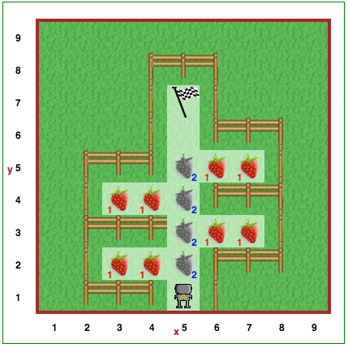

Atlikę paskutinį lygį supratote, jei Rėborgas atliks tris posūkius į kairę iš eilės, galutinis rezultatas bus toks
pat, kaip ir atlikus vieną posūkį į dešinę. Tikriausiai tapo gana nuobodu rašyti tris suktis_kairėn()
instrukcijas kiekvieną kartą, kai norėjote, kad Reeborgas pasuktų į dešinę. Argi nebūtų maloniau, jei galėtumėte
tiesiog parašyti suktis_dešinėn()?
Kaip galime iškviesti tokias integruotas funkcijas kaip suktis_kairėn() ir pirmyn(), taip
pat galime sukurti savo funkcijas. Naują Pitono funkciją galime apibrėžti taip:
def geras_funkcijos_pavadinimas():
# kelios kodo eilutės
# atitrauktos nuo krašto, kad būtų def viduje
def - tai pirmas sutiktas Pitono raktažodis. Raktažodžiai - tai žodžiai, kurie
programavimo kalbose turi ypatingą reikšmę. Atkreipkite dėmesį, kad dvitaškis : rašomas prieš
vadinamąjį kodo bloką, o po jo einanti išskirta dalis yra funkcijos kūnas. Pitone reikalaujama
tokius kodo blokus išskirti kiekvienos eilutės pradžioje paliekant vienodą tarpų skaičių. Tai leidžia
žmogui lengviau identifikuoti funkcijos kūną.
Parašykime pirmą Pitono funkciją:
def suktis_dešinėn():
suktis_kairėn()
suktis_kairėn()
suktis_kairėn()
Štai ir viskas! Dabar jums nereikės rašyti trijų suktis_kairėn() eilučių iš eilės, kad imituotumėte
posūkį į dešinę!
defDėmesio!
Atkreipkite dėmesį, kad šiame supaprastintame paaiškinime neatsižvelgiama į vadinamąją kintamųjų sritį, kurią aptarsime vėliau.
Ką tik pamatėte, kaip sukurti funkciją Pitone. Tikėtina, kad iš karto supratote, kaip jos veikia. Čia pateikiame išsamesnį paaiškinimą, kuris padės jums ne tik suprasti, kaip veikia funkcijos, bet ir kitos Pitono konstrukcijos, kurios apima kodo blokus.
Tarkime, turime tokį kodą:
def suktis_dešinėn(): # kodo bloko pradžia
suktis_kairėn()
suktis_kairėn()
suktis_kairėn() # kodo bloko pabaiga
pirmyn()
suktis_dešinėn()
pirmyn()
Tai yra tas pats, kas:
def suktis_dešinėn(): # kodo bloko pradžia
suktis_kairėn()
suktis_kairėn()
suktis_kairėn() # kodo bloko pabaiga
pirmyn()
# suktis_dešinėn() pakeičiama šiomis funkcijos komandomis
suktis_kairėn()
suktis_kairėn()
suktis_kairėn()
pirmyn()
Kitaip tariant, def nusako vardą, kurį galime naudoti kaip sinonimą visam kodo bloko viduje esančiam
kodui, ir kiekvieną kartą, kai matome, kad sinonimas yra įvardijamas [t. y. kai po vardo rašoma
()], galime manyti, kad tai yra lygiavertiška toje vietoje įterptam kodo blokui (kaip parodyta
pavyzdyje).
Atidaryk Robotuko aplinkos penktą lygį.
Robotukas savo sode nori nusiskinti braškių. Robotuko sodas yra labai keistos formos, kaip matėte aukščiau.
Apibrėžkite funkciją nuskinti_dvi_braškes(), kuri paima dvi braškes ir padeda jas ant žemės. Naudokite
ją keturis kartus kaip sprendimo dalį. Kaip visada, nepamirškite naudoti komentarų tuščių eilučių, kad padidintumėte
savo sprendimo skaitomumą!